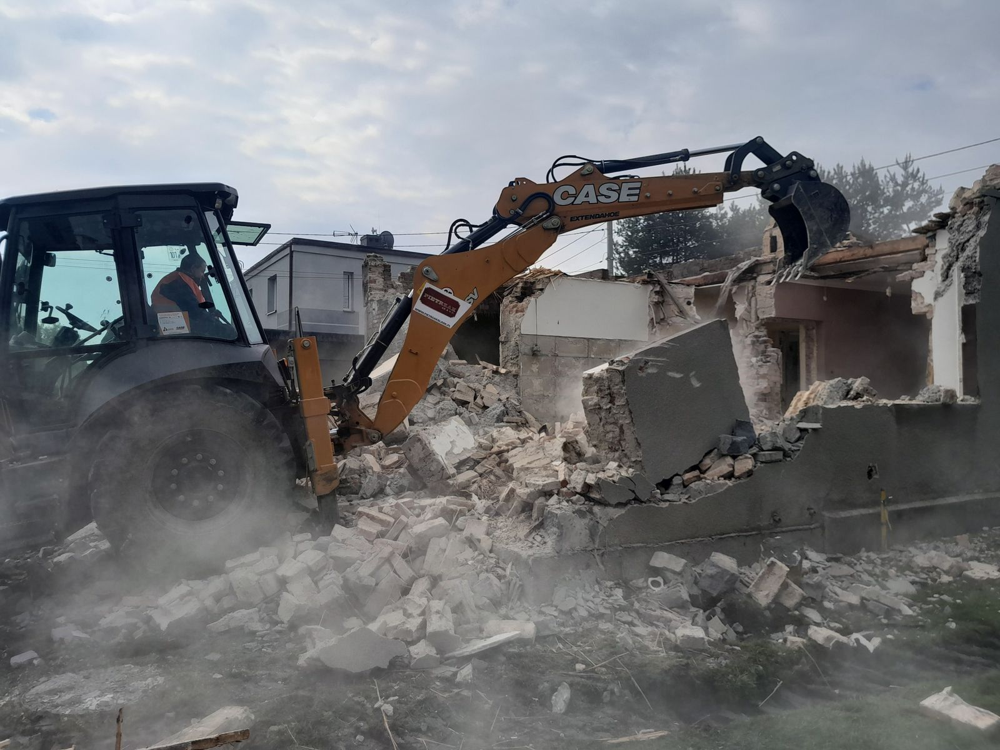
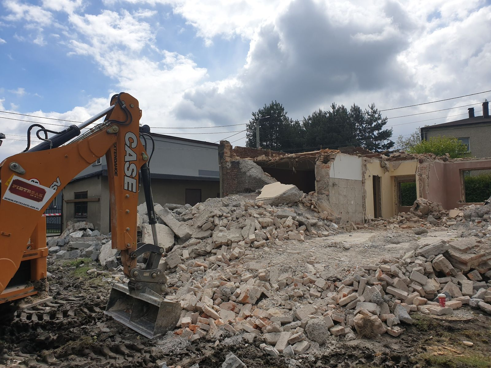
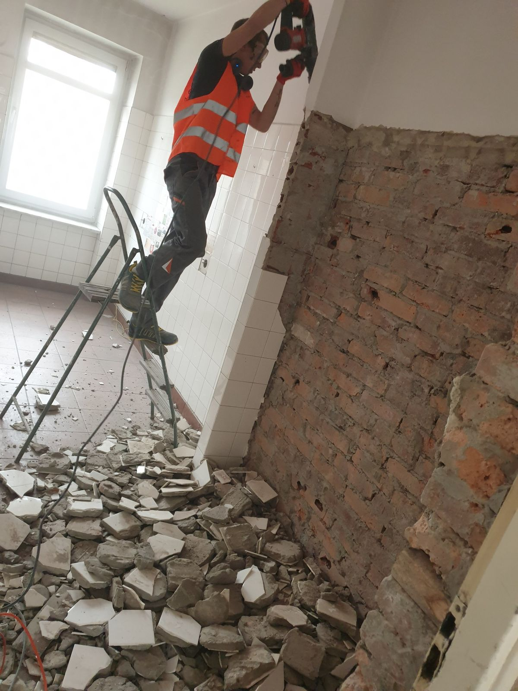
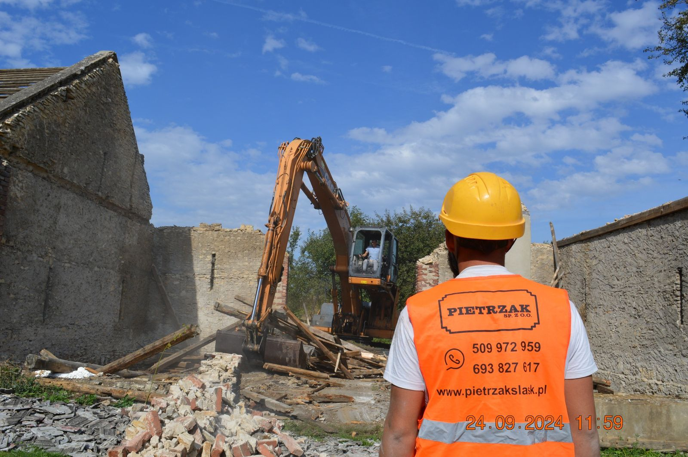

Usługi
Ręczne, mechaniczne i metodą strzałową — kompleksowo, z pełną dokumentacją, w woj. śląskim, małopolskim i opolskim.
Zakres usługi
Realizujemy kompleksowe wyburzenia i rozbiórki wszelkiego typu budynków, budowli, obiektów i urządzeń budowlanych — także tych wpisanych do rejestru zabytków oraz objętych ochroną konserwatorską. Wykonujemy rozbiórki ręczne, wyburzenia mechaniczne oraz metodą strzałową.

Galeria




Pytania i odpowiedzi
Tak, przygotowujemy dokumentację projektową (w tym strzałową) i pomagamy uzyskać pozwolenie na rozbiórkę oraz, jeśli to wymagane, decyzję o środowiskowych uwarunkowaniach.
W zależności od obiektu i lokalizacji dobieramy metodę ręczną, mechaniczną lub strzałową.
Zajmujemy się zagospodarowaniem lub utylizacją powstałych odpadów, a w przypadku obiektów zabytkowych — profesjonalnym odzyskiem materiałów.
Tak, realizujemy wyburzenia w woj. śląskim, małopolskim i opolskim.
Napisz nam zakres i lokalizację — przygotujemy wycenę i zaproponujemy metodę realizacji.
Zapytaj o wycenę